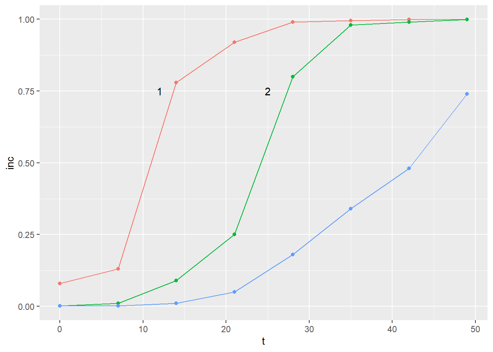

Usando datapasta vamos a cargar datos en el ambiente El uso básico de datapasta implica seleccionar un objeto de datos en R (como un data frame) y copiarlo al portapapeles del sistema operativo. Luego, se puede pegar directamente en otro programa (por ejemplo, un editor de texto o una hoja de cálculo).
Cargar conjunto usando tribble es una función útil en R para la creación rápida y estructurada de data frames, especialmente adecuada cuando se trabajan con datos simulados o cuando es necesario definir manualmente conjuntos de datos pequeños o medianos directamente en el código.
Anotate se utiliza para agregar texto explicativo directamente en el gráfico, como etiquetas o números.
Codigo
pepper |>pivot_longer(2:4, #se utiliza para reorganizar datos de formato ancho a largo, lo cual es útil para análisis y visualizaciones específicas.names_to ="epidemic",values_to ="inc") |>ggplot(aes(t, inc, color = epidemic))+geom_point()+geom_line()+#permiten crear gráficos de dispersión con líneas, destacando diferentes categorías (epidemic) con colores distintos.annotate(geom ="text",x =12,y =0.75,label ="1")+annotate(geom ="text",x =25,y =0.75,label ="2")+theme(legend.position ="none") #se utiliza para agregar texto explicativo directamente en el gráfico, como etiquetas o números.

Tabla de contingencia Las tablas de contingencia son herramientas muy útiles en análisis de datos categóricos, ya que permiten resumir y analizar la relación entre dos o más variables categóricas. En R, son fáciles de crear y analizar utilizando funciones como table() y chisq.test()
Codigo
cr <-read.csv("https://raw.githubusercontent.com/emdelponte/paper-coffee-rust-Ethiopia/master/data/survey_clean.csv")library(janitor)cr |>tabyl(cultivar, farm_management) ## Crear una tabla de contingencia usando tabyl()
library(ggthemes)library (ggplot2)library (tidyverse)cr |>count(farm_management, cultivar) |># pipe para pasar el data frame cr a la función count() ggplot (aes(cultivar, n, fill = farm_management, label =n))+#Cuenta las combinaciones únicas de farm_management y cultivar, creando un nuevo data frame con una columna n que contiene los conteos para cada combinación.geom_col(position =position_dodge2 (width =0.9)) +# Crea un gráfico de barras donde la altura de las barras representa los valores de n.scale_fill_canva()+#Aplica una paleta de colores específica de Canva a las barras del gráficotheme_bw()+theme(strip.text.x =element_blank(),legend.position ="top")+geom_text(position =position_dodge(width =0.9)) +#Desplaza las barras lateralmente para que no se superpongan. width = 0.9 ajusta el grado de desplazamientofacet_wrap(~cultivar, scales ="free_x") #Divide el gráfico en múltiples subgráficos (facetas), uno para cada nivel de cultivar.